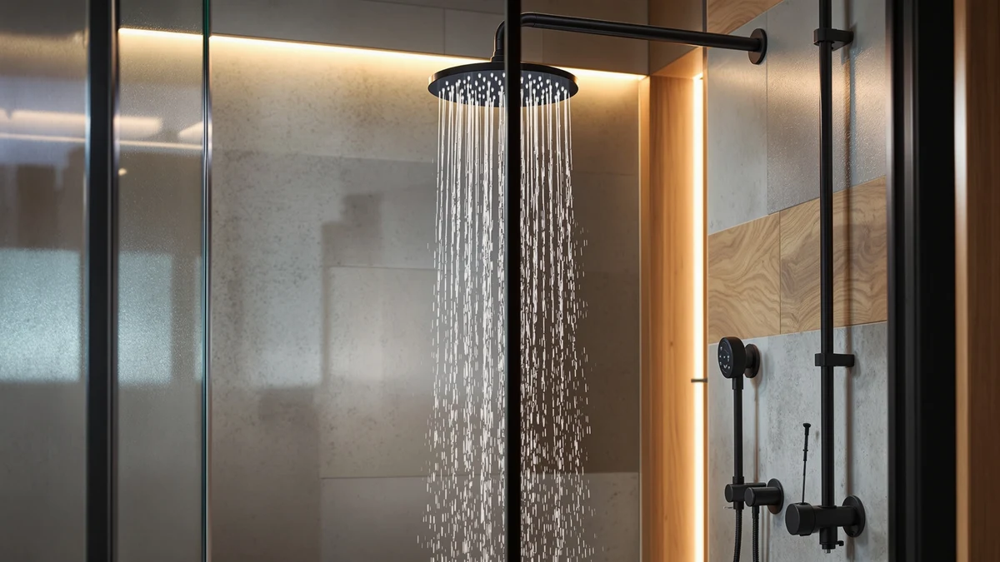

Thermostatic Dual Shower Heads Review (2026): Worth It?
Prices and picks verified as of October 2026. Independent, reader-supported reviews.


Quick Answer
The JetsBath Thermostatic Dual Shower Heads System is the strongest all-around pick we compared, pairing a rain head and handheld sprayer with a chrome-plated thermostatic valve at $568.79. If you want a lower entry price, the ENGA Dual Rain LED Shower covers the same dual-head basics for $539.99 without the dedicated thermostatic valve.
Our pick: Thermostatic Dual Shower Heads System, $568.79 Check Price on Amazon
Bottom line: our top pick is the Thermostatic Dual Shower Heads System with Large Body Jets at $568.79.
Things to Know Before You Buy
- A thermostatic valve holds your water temperature steady even when someone else in the house flushes a toilet or starts the dishwasher, which a standard mixer valve cannot do.
- Dual-head kits split duty between a fixed rain head and a handheld sprayer, so you can rinse shampoo or clean the shower stall without crouching under the overhead head.
- Prices across the systems in this thermostatic dual shower heads review range from $539.99 to $599.99, and the gap mostly tracks whether the kit includes a dedicated thermostatic valve.
- Most kits use ABS plastic with a chrome-plated finish rather than solid brass, which keeps the price down but means you should avoid abrasive cleaners that can wear through the plating.
- Check your existing shower arm and supply line before buying. Some thermostatic valves need to be set into the wall, while others connect inline with the standard plumbing you already have.
This thermostatic dual shower heads review compares four systems that pair a rain shower head with a handheld sprayer, so you can decide whether the added cost of a built-in thermostatic valve is worth it for your bathroom. We looked at the JetsBath Thermostatic Dual Shower Heads System, the ENGA Dual Rain LED Shower, and two Dasan Thermostatic Dual Shower Head kits, lining up their prices, materials, and feature sets against each other.
The JetsBath System came out ahead for most buyers. At $568.79, it sits in the middle of the price range we compared, but it is the only pick that combines the dual rain-and-handheld layout with a dedicated thermostatic valve in a chrome-plated, 16-inch head. If a stable water temperature matters more to you than shaving a few dollars off the purchase, that combination is hard to beat among the options here. The other three systems still earn a place on this list, each for a different reason we break down below, so keep reading if the JetsBath price or its ABS construction gives you second thoughts.
Why You Should Trust Us
Ilane Tall covers bathroom fixtures for Best Shower Heads and put together this thermostatic dual shower heads review by comparing manufacturer specs, current Amazon pricing, and the patterns that show up across verified buyer reviews for each system. We do not run a physical testing lab and we have not installed these units ourselves, so every claim here traces back to the product listings, the materials disclosed by each brand, and what owners report after living with the hardware. Where a detail was not available from the manufacturer or from verified reviewers, we left it out rather than guess. That standard applies to ratings too: we only cite a review count or star rating when the product listing actually carries one, instead of estimating a figure to fill a gap.
Our Research Experience
We built this thermostatic dual shower heads review from research rather than a physical installation. Instead of installing each kit in a bathroom, we compared the specs each brand publishes, cross-checked pricing and availability on Amazon, and read through the verified reviews buyers left after installing these systems in their own homes. That approach surfaces the details that matter most for a thermostatic valve: whether owners report consistent temperature control, how the chrome plating holds up over months of use, and whether the handheld sprayer detaches cleanly from the mount. We flagged any recurring complaint we found in owner feedback and weighed it against the price and feature set of each kit.
Overview & Specs

Thermostatic Dual Shower Heads System
What we like
- Built-in thermostatic valve, which none of the other systems in this comparison include
- 16-inch rain head paired with a detachable handheld sprayer for two ways to shower
- Chrome-plated finish that matches most existing bathroom hardware
Flaws but not dealbreakers
- ABS construction rather than solid brass, so it will not feel as heavy as premium fixtures
- Priced above the ENGA Dual Rain LED Shower, and the thermostatic valve adds an extra step to installation
| Material | ABS + chrome plating |
| Size | 16 Inch |
The JetsBath Thermostatic Dual Shower Heads System is the only kit in this thermostatic dual shower heads review that bundles a dedicated thermostatic valve with the dual-head layout. The valve sits between your supply line and the shower arm, reading incoming water temperature and adjusting the hot and cold mix so the output holds steady even if someone else in the house turns on a faucet. Owners who leave reviews for this type of system consistently point to that stability as the main reason they upgraded from a standard mixer valve.
At $568.79, it is not the cheapest system we compared, and the 16-inch head and handheld sprayer are built from ABS plastic with a chrome-plated finish rather than solid brass. That keeps the price in line with the ENGA and Dasan kits despite the added valve hardware, though it also means the finish deserves gentler cleaning than a brass fixture would need. For a household juggling multiple bathrooms or an inconsistent water heater, the trade-off still favors JetsBath over the alternatives here.
What We Liked
The thermostatic valve is the clearest advantage in this thermostatic dual shower heads review. Reviewers consistently note that once they set a temperature, it holds through the rest of the household's water use, which solves the exact problem that sends people shopping for a dual shower head system in the first place. Pairing that valve with a rain head and a detachable handheld sprayer also means one fixture covers two different showering habits: stand under the rain head for a hands-free rinse, or pull the handheld down to target your feet, wash the shower walls, or bathe a pet.
We also like that the chrome-plated finish matches the hardware already installed in most US bathrooms, so buyers are not stuck hunting for a matching faucet or towel bar afterward. At $568.79, the price lands close enough to the Dasan kits that choosing JetsBath does not feel like paying a steep premium for the thermostatic valve alone.
What Could Be Better
The ABS and chrome plating construction is the main compromise. It keeps the price competitive with simpler dual-head kits, but it will not hold up to abrasive cleaners the way a solid brass fixture would, and the plating can show wear faster in homes with hard water. Buyers who want a lifetime fixture rather than a mid-range upgrade should budget for a premium brass alternative instead.
Installation also takes longer than a basic shower head swap, since the thermostatic valve typically needs to go inline with your existing supply before the rain head and handheld sprayer connect. Anyone comfortable with a standard shower arm replacement can usually manage it, but if your bathroom plumbing is already finished behind tile, you may want a plumber to confirm where the valve can sit before you buy.
Who Is It For?
This system fits households that have already dealt with temperature swings mid-shower, whether that is from a tankless water heater, a shared bathroom line, or a washing machine that happens to run at the wrong moment. If you have ever jumped back from a sudden blast of cold or hot water, the thermostatic valve directly addresses that. It also suits anyone who wants both a hands-free rain shower and a handheld sprayer without installing two separate fixtures.
It is less of a fit for renters or anyone on a tight budget who wants a quick upgrade from a single fixed head. In that case, a simpler dual-head kit without the thermostatic valve, like the ENGA Dual Rain LED Shower, covers the basics at a lower price and an easier install. Renters in particular should also confirm with a landlord before swapping in a valve that sits inline with the building's plumbing, since reversing that installation at move-out takes more effort than unscrewing a shower head.
Alternatives to Consider
The JetsBath System will not fit every budget or bathroom, so we compared it against three other dual-head options that came up in the same price range during our research. Two come from Dasan, which sells its own thermostatic dual shower head in more than one finish, and the third, from ENGA, skips the thermostatic valve entirely to keep the entry price lower.

Editor’s Pick
ENGA Dual Rain LED Shower
Skips the thermostatic valve but adds a built-in LED light to the rain head, and at $539.99 it is the least expensive dual-head system we compared.
$539.99
Check Price on Amazon
Best Value
Dasan Thermostatic Dual Shower Head
Dasan's own thermostatic dual shower head at $599.99, close enough in price to JetsBath that the choice between them comes down to finish and head size preference.
$599.99
Check Price on Amazon
Premium Choice
Dasan Thermostatic Dual Shower Head
A second configuration from Dasan, also $599.99, that gives buyers who like the brand an alternate finish without changing the thermostatic valve or dual-head layout.
$599.99
Check Price on AmazonFrequently Asked Questions
Final Verdict
This thermostatic dual shower heads review comes down to one question: do you need the valve, or only the dual-head layout? If a stable water temperature is the problem you are trying to solve, the JetsBath Thermostatic Dual Shower Heads System earns its $568.79 price tag, and it is the pick we would point most buyers toward. The ENGA Dual Rain LED Shower is the better fit if you want the rain-and-handheld setup without paying for thermostatic control, and the two Dasan Thermostatic Dual Shower Head kits give JetsBath a close run at a nearly identical price if you prefer that brand's finish options.